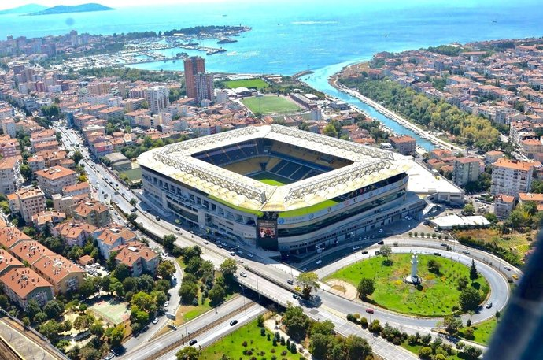

Fenerbahçe Spor Kulübü'nün resmi stadyumu olan Şükrü Saracoğlu Stadyumu (sponsorluk adıyla Chobani Stadyumu), İstanbul'un Kadıköy ilçesinde yer almaktadır. Türkiye'nin en atmosferik ve tarihi stadyumlarından biridir.

Stadyum sadece futbol maçlarına değil, aynı zamanda Fenerbahçe Müzesi, Fenerium mağazası ve çeşitli etkinlik alanlarına da ev sahipliği yapmaktadır.